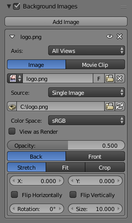

背景图像¶
参考
- 面板
3D视图中的背景图像在许多情况下非常有用：建模显然是其中的一种，也用在绘画时（例如，在模型上直接绘制纹理时可以有参考图片作为背景）或者动画时（使用视频作为背景时）等。
Note
背景图像仅适用于正交视图。
设置¶

- 轴向
选择图像在哪个视图可见。当你有多个来自不同视图的参考图像（例如，顶部，正面和侧面）时，这很有帮助。
- 绘制源
背景图像的来源。
- 图像
使用外部图像，图像序列，视频文件或生成的纹理。
- 影片剪辑
使用其中一个影片剪辑数据块。
- 不透明度
控制背景图片的透明度。
- 前 / 后
选择图像是显示在所有物体之后，还是显示在所有物体之前。
- 拉伸/适配/裁切
控制图像如何放置在相机视图中。
- 拉伸
强制图像尺寸与相机边界相匹配（可能会改变纵横比）。
- 适配
向下缩放将图像适合相机视图，而不会改变纵横比。
- 裁切
向上缩放图像, 使其填充整个相机视图, 但不改变纵横比 (部分图像将被裁剪)。
- X/Y
使用这些偏移量定位背景图像。
在正交视图中，这是以正常的场景单位来衡量的。在摄像机视图中，这是相对于摄像机边界测量的（0.1会将其偏移视图宽度/高度的10％）。
- 水平翻转
将图像水平翻转, 这样左边现在是右边, 右边是左边。
- 垂直翻转
将图像垂直翻转， 这样顶部现在在底部, 底部现在在顶部。
- 旋转
围绕其中心旋转图像。
- 尺寸
从中心向上或向下缩放图像。